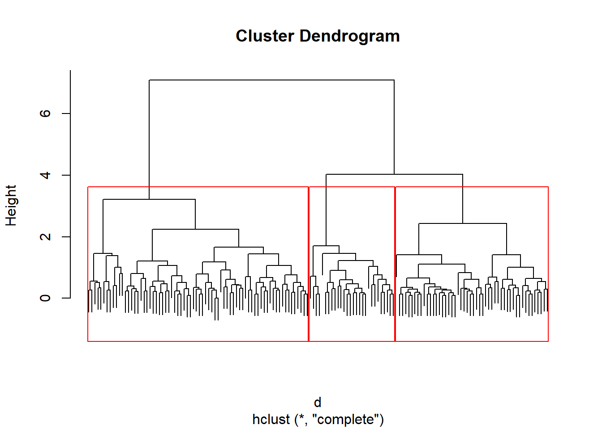

knitr::opts_chunk$set(warning =FALSE, message =FALSE)tryCatch( {# Directorio donde se ubica el qmd directory <-dirname(rstudioapi::getSourceEditorContext()$path)setwd(directory) # Establecer el directorio del archivo como la raiz },error =function(e) {message("")print("") })
[1] ""
# Se cargan datos y se omiten los nadata(iris)names(iris)
# Se grafica el arbol con el corteplot(clasif, label =FALSE)rect.hclust(clasif, k =3, border ="red")

# Se proceden a hacer los mismo arboles# pero con distintas distanciasd_L2 <-dist(X, method ="euclidean")d_L1 <-dist(X, method ="manhattan")d_max <-dist(X, method ="maximum")d_canb <-dist(X, method ="canberra")# Se realizan la clasificacionesfn_hclust <-function(distance, method ="average", cut_tree =3) { clasif <-hclust(distance, method)plot(clasif, labels =FALSE)rect.hclust(clasif, k = cut_tree, border ="red")}fn_hclust(d_L2)
fn_hclust(d_L1)
fn_hclust(d_max)
fn_hclust(d_canb)
Se puede observar como al cambiar las distancias se cambian las formas de los árboles.
# Se cargan los datos de los carrosdata(mtcars)names(mtcars)
Call:
hclust(d = dist(mtcars), method = "average")
Cluster method : average
Distance : euclidean
Number of objects: 32
(corte <-cutree(clasif_carros, k =3))
Mazda RX4 Mazda RX4 Wag Datsun 710 Hornet 4 Drive
1 1 1 2
Hornet Sportabout Valiant Duster 360 Merc 240D
2 2 2 1
Merc 230 Merc 280 Merc 280C Merc 450SE
1 1 1 2
Merc 450SL Merc 450SLC Cadillac Fleetwood Lincoln Continental
2 2 2 2
Chrysler Imperial Fiat 128 Honda Civic Toyota Corolla
2 1 1 1
Toyota Corona Dodge Challenger AMC Javelin Camaro Z28
1 2 2 2
Pontiac Firebird Fiat X1-9 Porsche 914-2 Lotus Europa
2 1 1 1
Ford Pantera L Ferrari Dino Maserati Bora Volvo 142E
2 1 3 1
plot(clasif_carros)rect.hclust(clasif_carros, k =3, border ="red")
a-
# Se muestra el grafico del dendograma# de los carrosclasif <-hclust(dist(mtcars))plot(clasif)
b-
# Se muestran las etiquetas todas la misma alturaplot(clasif, hang =-1)
c-
# Se crea un objeto dendogramaarbol <-as.dendrogram(clasif)# Se graficaplot(arbol)
d-
# Grafico en forma triangularplot(arbol, type ="triangle")
e-
# Dendograma cortado en la parte superiorop <-par(mfrow =c(2, 1))plot(cut(arbol, h =75)$upper, main ="Parte superior cortando en h = 75")plot(cut(arbol, h =75)$lower[[2]], main ="Parte inferio cortando en h = 75")
f-
# Grafico con coloreslabelColors <-c("#CDB380", "#036564", "#EB6841", "#EDC951")# Se corta el dendograma en 4 clasesclusMember <-cutree(clasif, 4)# Funcion para obtener las etiquetas de los colorescolLab <-function(n) {if (is.leaf(n)) { a <-attributes(n) labCol <- labelColors[clusMember[which(names(clusMember) == a$label)]]attr(n, "nodePar") <-c(a$nodePar, lab.col = labCol) } n}clustDendro <-dendrapply(arbol, colLab)plot(clustDendro, main ="Dendograma Bonito", type ="triangle")
g-
# Manejo de algunos parametrosop <-par(bg ="#DDE3CA")plot(clasif,col ="#487AA1", col.main ="#45ADA8", col.lab ="#7C8071",col.axis ="#F38630", lwd =3, lty =3, sub ="", hang =-1, axes =FALSE)# Annadir ejes h-axis(side =2, at =seq(0, 400, 100), col ="#F38630", labels =FALSE,lwd =2)# Annadir texto al margen -imtext(seq(0, 400, 100),side =2, at =seq(0, 400, 100), line =1,col ="#A38630", las =2)
j-
# Convertir el arbol a horizontal# intall paquetelibrary(ape)
# Definir vector de colores y cortar dendagrama en 5 y hacer que el tamanho refleje las millas por galonmypal <-c("#556270", "#4ECDC4", "#1B676B", "#FF6B6B", "#C44D58")clus5 <-cutree(clasif, 5)op <-par(bg ="#E8DDCB")plot(as.phylo(clasif),type ="fan", tip.color = mypal[clus5], label.offset =1,cex =log(mtcars$mpg, 10), col ="red")
n-
# Paquete sparcl# Se debe instalar el mismo# install.packages("sparcl")library(sparcl)# Colores de las hojas del arboly <-cutree(clasif, 3)# colorearColorDendrogram(clasif,y = y, labels =names(y), main ="Datos de Carros",branchlength =80)
# Paquete ggdendro# install.packages("ggdendro")library(ggdendro)# Se grafica el dendogramaggdendrogram(clasif)
# Se rotaggdendrogram(clasif, rotate =TRUE, size =4, theme_dendro =FALSE, color ="red")
# Lineas triangulares del paquete ggplot2# install.packages("ggplot2")library(ggplot2)ddata <-dendro_data(as.dendrogram(clasif), type ="triangle")ggplot(segment(ddata)) +geom_segment(aes(x = x, y = y, xend = xend,yend = yend )) +ylim(-10, 150) +geom_text(data =label(ddata), aes(x = x,y = y, label = label ), angle =90, lineheight =0)
# Dendograma de Romain Francoissource("http://addictedtor.free.fr/packages/A2R/lastVersion/R/code.R")# Dendograma coloreadoop <-par(bg ="#EFEFEF")A2Rplot(clasif, k =3, boxes =FALSE, col.up ="gray50", col.down =c("#FF6B6B","#4ECDC4", "#556270"))
par(op)# Otro dendograma coloreado con el fondo negroop <-par(bg ="gray15")cols <-hsv(c(0.2, 0.57, 0.95), 1, 1, 0.8)A2Rplot(clasif, k =3, boxes =FALSE, col.up ="gray50", col.down = cols)